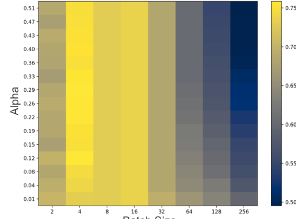
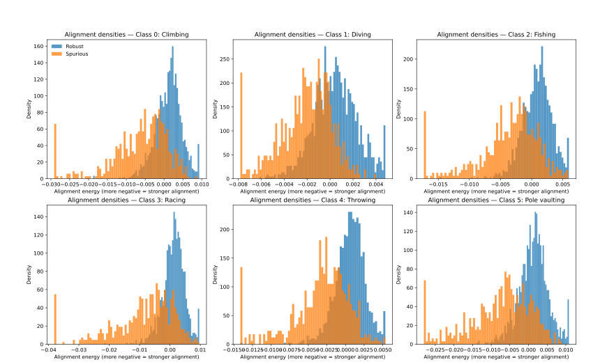
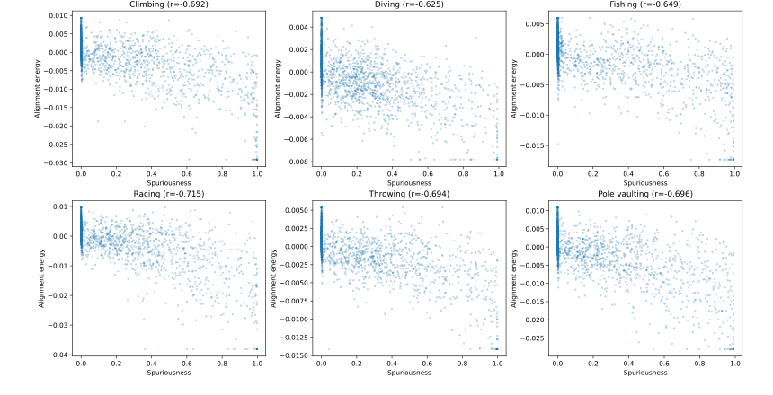

Regulating Internal Alignment Flows for Robust Learning Under Spurious Correlations
Alignment-Gated Suppression (AGS) is a lightweight, group-agnostic regularizer that intervenes inside the network during training. It tracks class-conditional alignment energy, suppresses the most extreme shortcut-dominated pathways, and improves worst-group robustness without needing group labels.
Robustness, without the annotation tax
Deep models often latch onto background, attribute, or dataset artifacts because those cues are easy to optimize. AGS tackles this problem from the inside of the model instead of only acting on data sampling or loss design. It computes a class-conditional, confidence-weighted alignment signal for each neuron-to-class link and selectively shrinks the most extreme contributors.
Shortcut learning quietly erodes worst-case reliability
High average accuracy can hide catastrophic failures on minority or bias-conflicting groups. The paper focuses on closing that gap without asking for group labels.
It regulates internal pathways, not just examples
Rather than relying purely on reweighting, environment labels, or post hoc pruning, AGS contracts shortcut-heavy links during training itself.
Better robustness with strong average accuracy
Across Waterbirds, CelebA, BAR, and a COCO gender-object bias construction, AGS improves average accuracy, worst-group accuracy, and calibration.
Alignment-Gated Suppression in one page
AGS works on the final linear classifier by default. For every class, it estimates which neuron-to-class links repeatedly show strong, confidence-weighted alignment. The lower tail of this distribution is then selectively decayed with a percentile-gated multiplicative update.
Measure per-example alignment
Use the model’s own prediction confidence and the current classifier weights to score each neuron-class link.
Aggregate on-batch, class-wise
Average the alignment signal over examples with the same label, with a small epsilon guard for missing classes.
Smooth with EMA
Maintain a stable, low-variance running estimate so gates do not jitter wildly from noisy mini-batches.
Apply percentile-gated decay
After warm-up, decay only the most extreme contributors for each class while keeping a mild global decay for stability.
Alignment score. More negative means stronger confidence-weighted support for class k.
Mini-batch class-conditional alignment energy.
EMA smoothing to reduce gate flips and stabilize training.
Within-class threshold. It is scale-free because it depends on rank, not absolute magnitude.
Binary gate that flags the lower-tail contributors for class k.
Selective contraction with a small global shrink term to prevent scale oscillation.
Confidence-weighted targeting
High-confidence, class-aligned routes receive larger-magnitude alignment and are more likely to be targeted. The formulation is invariant to logit-preserving rescaling.
Stable, budgeted gating
Percentile gates cap how many features are suppressed per class, while EMA smoothing keeps decisions stable even with noisy batches.
Contractive and sparsifying
Persistently gated coordinates shrink geometrically, acting like structured, class-conditional capacity control rather than blunt uniform regularization.
Suppress bias, preserve robust cues
Shortcut-heavy paths are attenuated, while robust features that avoid the lower tail are left intact and remain influential in the final decision.
Where AGS is tested
The paper evaluates AGS on standard spurious-correlation benchmarks plus a COCO construction with gender-object bias. Together, these datasets stress background bias, attribute bias, action-context bias, and object-context bias.
Waterbirds
Background shortcut benchmark where waterbirds usually co-occur with water and landbirds with land. Minority groups flip that correlation.
CelebA
Gender prediction with hair color as the spurious attribute, testing whether the model over-relies on correlated appearance cues.
BAR
Action recognition under shifted contexts, such as indoor climbing when training mostly observes the stereotypical outdoor setting.
COCO Gender/Object Bias
A caption-labeled binary gender task with sports/outdoor and kitchen/indoor objects used as the spurious correlates.
Strong average accuracy, stronger worst-case behavior
AGS moves the robustness frontier in a useful direction. The paper reports top average accuracy on Waterbirds, best benchmark numbers on CelebA’s unbiased and conflicting splits, state-of-the-art average accuracy on BAR, and the strongest average accuracy on the COCO gender-object bias setting.
More than 5 points above the strongest prior method listed in the paper’s table.
Top average accuracy in the comparison table, paired with 80.93% worst-group accuracy.
A +2.39 point gain over EvA-E and +15.58 over vanilla ERM in the benchmark summary.
Best average score in the validation comparison, while notably shrinking bias gaps.
| Method | BAR Avg. | CelebA Unbiased | CelebA Conflicting | Waterbirds Avg. | Waterbirds Worst |
|---|---|---|---|---|---|
| Vanilla | 60.51 ± 4.3 | 70.25 ± 0.4 | 52.52 ± 0.2 | 94.10 ± 4.3 | 63.74 ± 3.2 |
| LfF | 62.98 ± 2.8 | 84.24 ± 0.4 | 81.24 ± 1.4 | 89.60 ± 2.4 | 74.98 ± 2.1 |
| EIIL | 68.44 ± 1.2 | 85.70 ± 1.6 | 81.70 ± 1.5 | 95.88 ± 1.7 | 77.20 ± 1.0 |
| JTT | 68.53 ± 3.2 | 86.40 ± 4.6 | 77.80 ± 2.5 | 93.70 ± 0.5 | 84.98 ± 0.5 |
| SiFER | 72.08 ± 0.4 | 90.00 ± 0.9 | 88.04 ± 1.2 | 96.11 ± 0.6 | 77.22 ± 0.4 |
| EvA-E | 73.70 ± 0.8 | 90.51 ± 1.0 | 88.74 ± 1.4 | 96.95 ± 0.9 | 81.31 ± 1.5 |
| AGS (Ours) | 76.09 ± 0.38 | 95.63 ± 0.28 | 93.95 ± 1.06 | 97.44 ± 0.29 | 80.93 ± 1.32 |
| Method | COCO Avg. | Sports Unbiased | Sports Conflicting | Kitchen Unbiased | Kitchen Conflicting |
|---|---|---|---|---|---|
| Vanilla | 69.50 | 70.81 | 64.61 | 73.20 | 67.36 |
| FairKL | 73.67 | 76.32 | 67.11 | 74.35 | 76.90 |
| EnD | 76.95 | 77.11 | 70.97 | 82.38 | 77.34 |
| FLAC | 79.88 | 80.02 | 77.31 | 80.22 | 79.95 |
| BAdd | 81.76 | 81.28 | 77.81 | 82.91 | 83.05 |
| GMBM | 83.54 | 83.78 | 83.85 | 83.19 | 83.35 |
| AGS (Ours) | 84.27 | 84.53 | 83.86 | 85.41 | 83.26 |
Bias gap reduction on COCO
Sports gap shrinks from 6.20 to 0.67. Kitchen gap shrinks from 5.84 to 2.15. AGS redistributes reliance toward context-invariant signals.
Waterbirds trade-off
AGS achieves the best average accuracy and near-top worst-group accuracy, highlighting a practical Pareto balance between average and worst-case performance.
Scales beyond the small benchmarks
On the ImageNet-9 Backgrounds Challenge, ERM+AGS improves Original, Mixed-Same, Mixed-Rand, and Mixed-Next accuracy over ERM.
What the ablations and figures say
The paper does more than report final scores. It shows where the gains come from, how stable the method is, and what kinds of pathways AGS learns to suppress.

| Variant | Worst-group | Average |
|---|---|---|
| AGS (full) | 79.4 | 97.1 |
| w/o confidence weighting | 73.9 | 91.8 |
| w/o EMA | 75.2 | 91.7 |
| EvA-style activation-only proxy | 70.1 | 90.9 |
The full training-time design matters. Replacing the parameter-space alignment signal with an activation-only proxy leads to a major drop in worst-group accuracy.


Component-wise gains are monotonic
Starting from ERM, adding confidence weighting improves worst-group accuracy, adding EMA helps further, and percentile gating delivers the biggest final jump.
Percentiles keep control scale-free
Because suppression depends on within-class order statistics, AGS remains stable under logit-preserving rescaling and avoids brittle hand-tuned thresholds.
Mechanistic story matches the numbers
The paper’s discussion links AGS to minority-margin gains, path-norm-like capacity control, and improved stability through EMA-smoothed gating.
Training recipe and practical details
The default setup is intentionally light. AGS is attached to the penultimate representation and final classifier, uses a short warm-up, and adds only small bookkeeping on top of standard fine-tuning.
| Dataset | Batch size | Epochs | Optimizer | AGS hyperparameters (α, Tw, β, q) |
|---|---|---|---|---|
| Waterbirds | 32 | 100 | Adam, lr = 1e-4, wd = 1e-4 | (0.075, 5, 0.75, 20) |
| CelebA | 32 | 30 | Adam, lr = 1e-4, wd = 1e-4 | (0.075, 5, 0.75, 20) |
| COCO (ours) | 32 | 50 | Adam, lr = 1e-4, wd = 1e-4 | (0.035, 5, 0.75, 20) |
| BAR | 8 | 50 | SGD, lr = 1e-3, wd = 1e-4 | (0.075, 5, 0.75, 20) |
Backbone
ResNet-50 fine-tuned end-to-end from ImageNet initialization with standard augmentations such as random resized crops, flips, and mild color jitter.
State
AGS stores only a D × C EMA buffer and stop-gradient gating state. No architectural edits and no gradients through the gates are required.
Selection metric
Worst-group accuracy on the validation split is the primary model-selection criterion, except on BAR where average accuracy is reported.
AGS plays well with other robustness tools
The paper positions AGS as complementary to data- and loss-level methods such as GroupDRO, IRM, JTT, and LfF. Its intervention point is the internal weight/connection level, which makes it a neat plug-and-play addition to standard training loops.
Where the method could grow next
The paper notes that very small or highly imbalanced batches can destabilize thresholds, strong suppression can underfit entangled regimes, and earlier layers may also carry spurious pathways. Suggested extensions include adaptive budgets, variance-reduced estimation, layer-wise gating, and integration with group discovery or DRO.
BibTeX
@inproceedings{dwivedi2026ags,
title = {Regulating Internal Alignment Flows for Robust Learning Under Spurious Correlations},
author = {Dwivedi, Rajeev Ranjan and Kalagond, Mohammedkaif and Patel, Niramay M. and Kurmi, Vinod K},
booktitle = {International Conference on Learning Representations (ICLR)},
year = {2026}
}